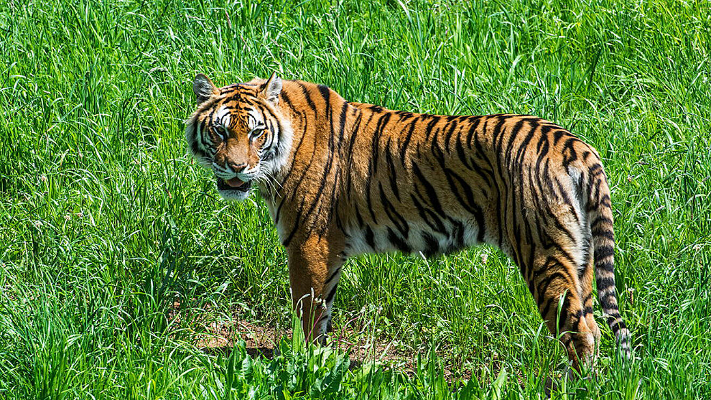

Animals

Gat
Hamster
Furó
Fardatxo

Lleó

Gos
Serp

Tigre
Tortuga
Rabosa
Centres de recuperació

C.R.F. El veller
"El Centro de Recuperación de Fauna Silvestre El Valle continúa trabajando al considerarse un servicio esencial y teniendo en cuenta la importancia que la actividad de los centros clínicos veterinarios y de cuidados de animales tienen en la vigilancia y control de las enfermedades que desarrollamos.

C.R. Fauna salvatge
"El Equipo de Rescate de Fauna Salvaje es un proyecto pionero desde sus inicios, que lleva en funcionamiento desde principios 2005, no existiendo actualmente en la Comunidad de Madrid ningún otro equipo profesional de rescate de fauna herida que funcione 24 horas al día"